Segurança de Dados e Endpoints
Segurança de Endpoint é um conjunto de práticas e tecnologias que protegem os dispositivos dos usuários finais, como desktops, laptops e telefones celulares contra a instalação de software malicioso e indesejado.
Os profissionais e membros de equipe estabelecem conexão com as redes e acessam os recursos corporativos e não corporativos ao usar esses dispositivos.
As organizações devem proteger esses dispositivos para evitar o acesso não autorizado, uso por terceiros e a invasão na rede, aplicações e armazenamento de dados.
Segurança de dados, no contexto de prevenção contra perdas de dados (ou DLP – Data Loss Prevention), é uma estratégia implantada pelas empresas para garantir que as informações confidenciais permaneçam com segurança na rede corporativa.
As tecnologias de DLP garantem que os usuários não enviem informações confidenciais ou críticas para fora da rede corporativa, em outras palavras, o termo descreve produtos de software que ajudam a corporação a controlar os dados que os usuários podem transferir, a partir de regras de negócios para classificar e proteger informações confidenciais e críticas de forma que usuários não autorizados não possam compartilhar dados acidental ou maliciosamente, o que colocaria a organização em risco.
Visão geral na CAIXA
Situação atual
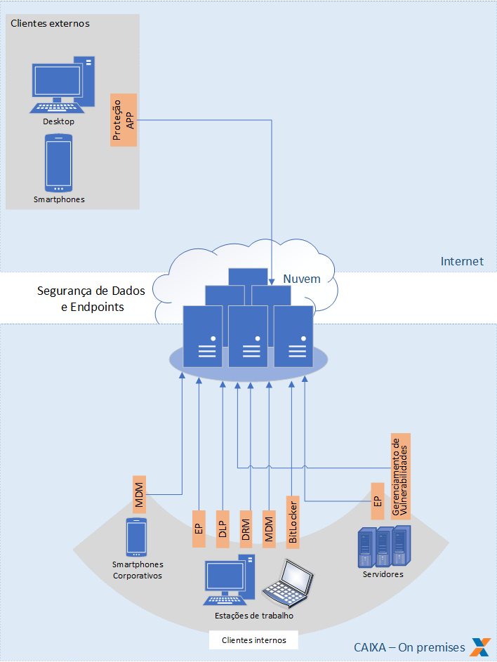
Arquitetura de Referência
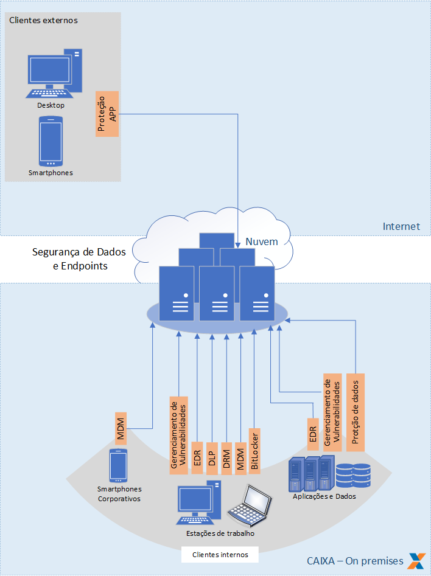
1 - EP - Endpoint Protection (Antivírus)
O Endponint Protection, comumente conhecido como antivírus, é responsável por combater softwares maliciosos (malwares) cujo objetivo é atacar os ativos de TI visando obter acessos indevidos aos computadores ligados em rede.
O antivírus atua tanto com bases de "assinaturas" de vírus quanto por heurística, observando o comportamento de arquivos encontrados no computador, ou em uso, procurando identificar neles comportamentos abusivos.
Quando identificado um malware, o antivírus atua bloqueando a ações do software e alertando as áreas de monitoração de segurança (SOC) sobre os riscos envolvendo aquele endpoint comprometido.
Indicação de uso: todas as estações de trabalho (notebooks e desktops), servidores corporativos e aplicações hospedadas em ambiente de nuvem.
Situação atual: Solução McAfee Endpoint Security contratada/disponível para uso no ambiente on premises. Para aplicações corporativas em nuvem, utilizar a proteção nativa da nuvem contratada. (Solução de EDR em prospecção, em substituição às soluções de EP).
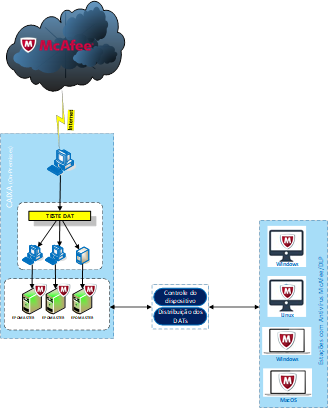
2 - EDR (Endpoint Detection and Response)
O EDR (endpoint detection and response ou detecção e resposta de endpoint) é uma ferramenta que monitora terminais (endpoints) e servidores para detectar ameaças cibernéticas, além disso, também é capaz de responder a esses agentes maliciosos, sendo capaz de agir imediatamente diante de falhas, ações hacker e outros erros operacionais.
A detecção e resposta de endpoint auxilia no combate de técnicas de hackers cada vez mais sofisticadas como, por exemplo, novos exploits ou outros tipos de ameaças para tirar proveito da infraestrutura de segurança cibernética,
O EDR oferece uma melhor detecção de ameaças e permite que as equipes de segurança respondam às violações mais rapidamente, principalmente, utilizando recursos de respostas automatizadas.
A principal diferença entre soluções do tipo EDR e EP é que as ferramentas EP tradicionais fornecem recursos básicos de segurança, como varredura anti-malware, enquanto as ferramentas EDR fornecem recursos mais avançados, como detecção e investigação de incidentes de segurança.
As soluções de EDR também são capazes de reverter os terminais para o estado pré-infectado.
As organizações podem combinar as duas ferramentas para fornecer uma solução de segurança mais holística.
As principais funções do EDR são:
- Detectar ameaças;
- Correção de falhar assim que as detecta;
- Monitoramento contínuo dos endpoints online ou offline;
- Resposta em tempo real;
- Armazenamento de informações;
- Integração com diversas soluções de segurança;
- Unificação dos endpoints e suas informações.
Indicação de uso: todas as estações de trabalho (notebooks e desktops) e aplicações hospedadas em ambiente de nuvem.
Situação atual: 10.000 licenças da solução Microsoft Defender for Endpoint contratadas/disponível para uso em estações de trabalho. Para ambientes corporativos em nuvem, utilizar a proteção nativa da nuvem contratada. (Solução definitiva para proteção de endpoints do tipo estação de trabalho e servidor em prospecção).
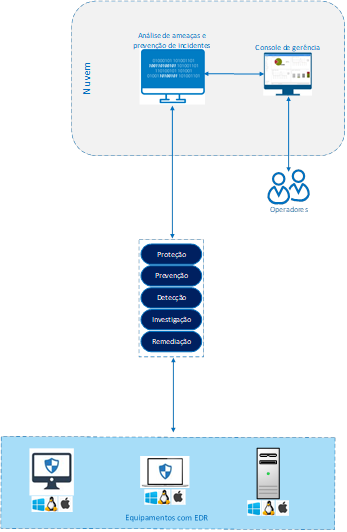
3 - Gerenciamento de Dispositivos Móveis (Mobile + MDM + MAM)
Gerenciamento de dispositivos móveis é qualquer software que permite que a área tecnologia consiga automatizar, controlar e proteger as políticas administrativas em notebooks, desktops, smartphones, tablets conectados à rede de uma organização ou utilizados de forma corporativa.
Mobile Device Management (MDM)
O Mobile Device Management (MDM) é uma solução integrada e centralizada que permite gerenciar toda a base de dispositivos móveis inteligentes (Smartphones, Tablets e Dispositivos Especiais), com funcionalidades que incluem provisionamento remoto (Over The Air), segurança das informações e sistemas, gerenciamento de dispositivos em grupos ou individual, administração de aparelhos pessoais no ambiente corporativo, bloqueio e limpeza de dispositivos, gestão de aplicativos instalados, controle de inventário, geolocalização e aplicação de políticas de uso.
Mobile Application Management (MAM)
O Mobile Application Management (MAM) refere-se ao gerenciamento de todo o ciclo de vida da aplicação, incluindo instalação, exclusão e atualização de aplicações, assim como o gerenciamento de licenças de aplicações, permissões, configurações etc. Também inclui a definição de políticas para aplicações, além de restrições nas aplicações e os dados com os quais trabalham.
Podemos destacar como principais funcionalidades e benefícios:
- Possibilidade de limpeza remota dos dados da empresa em caso de roubo do dispositivo, ou desligamento do funcionário.
- Possibilidade de desativação de recursos como Câmera, Bluetooth, Extração de Dados por USB, Print Screen.
- Possibilidade de bloqueio de instalação de softwares aplicativos, bem como a instalação em lote de aplicativos relevantes a empresa.
- Possibilidade de desativar o acesso a redes WiFi não autorizadas, permitindo apenas o WiFi corporativo.
- Controle de acesso à rede e aos aplicativos corporativos.
Indicação de uso: Todas as estações de trabalho (notebooks e desktops) e dispositivos móveis corporativos.
Situação atual: Microsoft Endpoint Manager (Intune) e Microsoft System Center
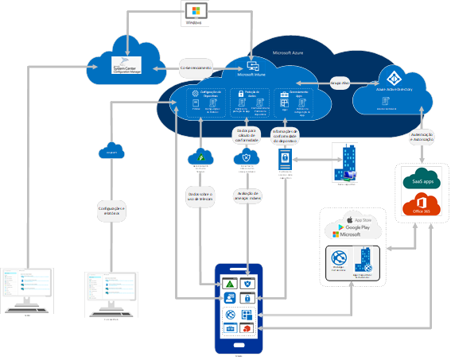
4 - Gerenciamento de Vulnerabilidades
O scanner de vulnerabilidade é um processo que realiza a análise nos ambientes, redes, servidores de aplicação, containers, aplicações etc. em busca de identificar vulnerabilidades conhecidas.
O processo pode ocorrer com scans autenticados e não autenticados.
Autenticado:
As varreduras autenticadas permitem que o scanner acesse diretamente os ativos baseados em rede usando protocolos administrativos remotos, como SSH ou protocolo de área de trabalho remota (RDP) e autentique usando as credenciais do sistema fornecidas.
Isso permite que o scanner acesse dados de baixo nível, como serviços específicos e detalhes de configuração do sistema operacional do host.
Ele pode fornecer informações detalhadas e precisas sobre o sistema operacional e o software instalado, incluindo problemas de configuração e patches de segurança ausentes.
Não Autenticado:
Os scans não autenticados são um método que podem resultar em um alto número de falsos positivos e não pode fornecer informações detalhadas sobre o sistema operacional dos ativos e o software instalado.
Esse método é normalmente utilizado para realizar a varredura de forma externa a infraestrutura corporativa.
Indicação de uso: Todas as estações de trabalho (notebooks e desktops), servidores, dispositivos móveis corporativos e aplicações Web.
Situação atual: Solução OpenVAS, Open-source, realiza varredura em ambiente interno de forma não obrigatória. (Em prospecção nova solução de mercado)
Situação alvo: Aquisição de solução com capacidade de realizar varredura interna, externa, autêntica e não autenticada. - Integração a pipeline de CI/CD com análise obrigatória na Build e de forma contínua no ambiente de produção
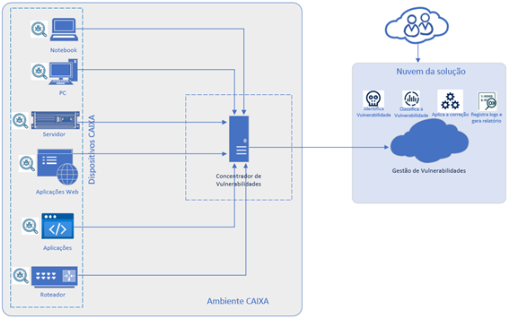
5 - Proteção do Dispositivo do Cliente
Assim como é importante a proteção de endpoints corporativos (usuários internos - estações de trabalho e servidores), a segurança nos dispositivos dos clientes externos que possuem APP’s da CAIXA instalados, também, é essencial para proteger o acesso às aplicações hospedadas no ambiente corporativo.
São características da solução de Proteção do Cliente:
- Proteção contra trojans;
- Proteção contra páginas falsas;
- Proteção contra URLs falsas;
- Geração de ID de dispositivo;
- Geração de eventos;
- Proteção contra root/jailbreak em dispositivos móveis;
- Análise de risco de transações no dispositivo.
Indicação de uso: Todos os aplicativos móveis, conforme arquitetura de referência de mobilidade.
Situação atual: Solução Topaz OFD contratada/disponível para uso.
Descrito na Arquitetura de Referência de Mobilidade.
6 - DLP
O processo de DLP – Data Loss Prevention (Prevenção à perda de dados) tem por objetivo reduzir o risco de vazamento, roubo e compartilhamento inadequado de dados corporativos por meio da identificação, monitoração e aplicação de políticas nos pontos de saída, como email, portas USB, capturas de tela, impressão, compartilhamento de arquivos, entre outros.
As políticas de DLP são previamente definidas pela CAIXA, em alinhamento às normas internas, regulamentações externas e grau de confidencialidade dos dados, podendo haver o controle da saída de determinadas informações.
Indicação de uso: Todas as estações de trabalho (notebooks e desktops) e dispositivos móveis corporativos.
Situação atual: McAfee Endpoint Security (DLP)
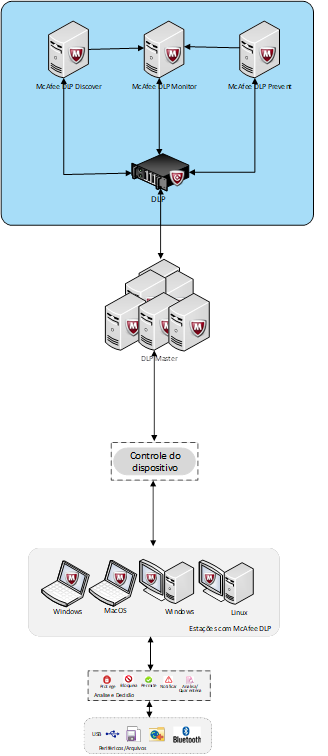
7 - DRM
O DRM - Digital Rights Management permite a proteção persistente de arquivos e e-mails por meio da aplicação de políticas que usam mecanismos de criptografia, identidade e autorização.
Isso permite que a proteção dos dados corporativos esteja ativa mesmo fora do perímetro organizacional.
A solução DRM garante o correto acesso e tratamento da informação, a depender do usuário e seus atributos (usuário, localização, meio de acesso, forma de acesso, rede, entre outros).
Indicação de uso: Todas as estações de trabalho (notebooks e desktops) e dispositivos móveis corporativos
Situação atual: Microsoft 365 e Sharepoint
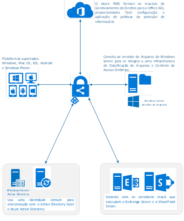
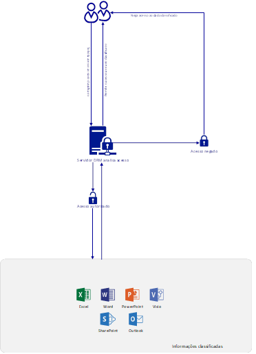
8 - BitLocker
O Microsoft BitLocker é um recurso de segurança nativo do Windows que criptografa tudo na unidade em que o sistema está instalado. Pode-se criptografar os HDs dos computadores ou unidades de dados externas, a criptografia garante que apenas aqueles com a chave de criptografia correta serão capazes de descriptografar e acessar os arquivos e informações. O recurso previne contra acessos externos não autorizados nos módulos de armazenamento.
O BitLocker funciona utilizando um elemento de hardware chamado de TPM (Trusted Platform Module). A ferramenta cria uma chave de recuperação para o disco rígido, de modo que toda vez que se iniciar o computador, um número PIN específico será solicitado para obter acesso.
Existe uma chave de recuperação do BitLocker, que consiste em uma senha numérica exclusiva de 48 dígitos que pode ser usada para desbloquear seu sistema se o BitLocker não conseguir confirmar de outra forma se a tentativa de acesso à unidade do sistema está autorizada. O BitLocker disponibiliza uma chave de recuperação protegida com segurança antes de ativar a proteção.
O objetivo do BitLocker é proteger os computadores e unidades contra violações e invasões de dados.
Indicação de uso: Todas as estações de trabalho (notebooks e desktops).
Situação atual: BitLocker da Microsoft nas estações de trabalho (notebooks e desktops).
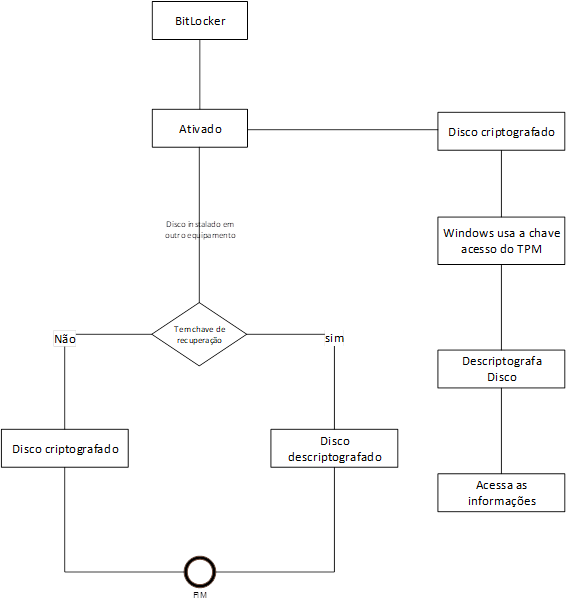
9 - Monitoração de Bancos de Dados
A solução de monitoração a Bancos de Dados garante a rastreabilidade dos comandos executados por usuários DBA’s. A monitoração consiste em identificar quando um comando SQL é executado na base de dados.
Controle de monitoramento/revisão tempestiva dos logs relacionados a execução e comandos de alteração de dados nos bancos de dados. Ainda é possível realizar o bloqueio de um comando SQL a partir de uma política definida na própria ferramenta (IBM Guardium).
A solução IBM Guardium permite atuar de modo a adotar medidas de segurança técnicas e administrativas aptas a proteger os dados estruturados quando da execução de comandos SQL nas bases de dados, evitando situações acidentais ou ilícitas de destruição, perda, alteração indevida ou qualquer forma de tratamento inadequado dos dados.
Fortalece a eficiência do tratamento de incidentes de segurança, elevando a capacidade de gestão das bases de dados e permitindo a resposta mais rápida às ameaças.
Centraliza os dados de auditoria das bases de dados, permitindo integração com as demais ferramentas de segurança contratadas pela CAIXA.
É importante salientar que a solução não visa a gestão de acesso as bases de dados.
Indicação de uso: Bases de dados dos sistemas críticos do ambiente corporativo da CAIXA.
Situação atual: Solução IBM Guardium.
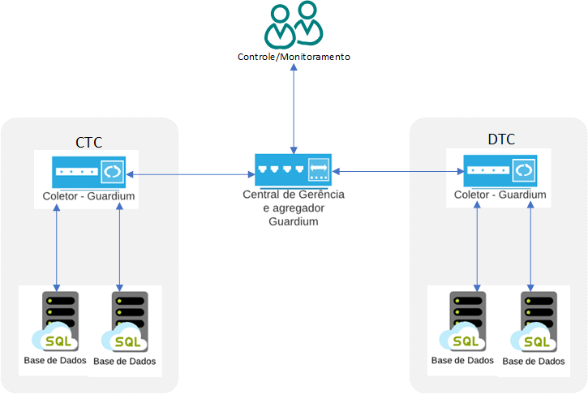
Histórico da Revisão
| Data | Versão | Descrição | Autor |
|---|---|---|---|
| 28/11/2022 | 1.0 | Revisão | Cássio Luiz Pereira Raymualdo |